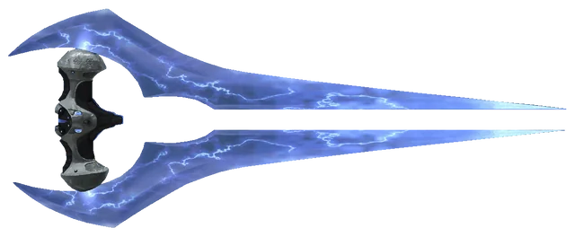

Projects
Here are some of the projects I'm working on or completed:
Asynchronous Networking Library & Chat Application
University of Utah - Kahlert School of Computing
Fall 2024
- Designed and implemented a general-purpose asynchronous networking library in C# to support text-based communication, enabling seamless client-server interactions for a chat application and future game projects.
- Developed a multi-threaded chat server capable of handling multiple clients concurrently, broadcasting messages to all connected users, and dynamically assigning usernames to clients upon connection.
- Ensured thread safety and race condition prevention by implementing proper synchronization techniques in the server and networking library.
- Integrated logging functionality to monitor and debug server and client activities, ensuring proper error handling and system traceability.
- Collaborated with a partner using pair programming and GitHub for version control, following Agile practices to deliver the project iteratively.
- Utilized TcpClient/TcpListener APIs to build a robust networking infrastructure, abstracting low-level details for ease of use in higher-level applications.
Technologies Used: C#, .NET, TcpClient/TcpListener, Multi-threading, Concurrency, Logging, GitHub
Spreadsheet Application with GUI
University of Utah - Kahlert School of Computing
Fall 2024
- Designed and implemented a fully functional spreadsheet application with a Blazor-based GUI, enabling users to input data, formulas, and perform calculations in real-time.
- Integrated the Model-View-Controller (MVC) architecture to separate the spreadsheet logic (Model) from the GUI (View) and user interactions (Controller), ensuring maintainability and scalability.
- Developed features such as cell selection, formula evaluation, and dynamic updates for dependent cells, ensuring accurate and efficient spreadsheet functionality.
- Implemented file I/O operations to save and load spreadsheets in JSON format, including error handling for invalid file inputs.
- Added advanced features such as keyboard navigation, cell highlighting for formula dependencies, and a warning system for unsaved changes, enhancing user experience.
- Collaborated with a partner using pair programming and GitHub for version control, following Agile practices to deliver the project iteratively.
- Conducted code reviews and documented design decisions, challenges, and time tracking in the project README.
Technologies Used: Blazor, C#, .NET, MVC Architecture, JSON, GitHub, Pair Programming
Snake Game Client Development
University of Utah - Kahlert School of Computing
Fall 2024
- Developed a Blazor-based GUI client for a networked Snake game, enabling real-time interaction with a server to display game state and send player commands.
- Implemented client-server communication using a custom protocol, including JSON serialization/deserialization for game objects (snakes, walls, power-ups).
- Designed and structured the application using MVC architecture, ensuring separation of concerns and maintainability.
- Utilized multi-threading and concurrency to handle real-time updates and user inputs while avoiding race conditions.
- Collaborated with a partner using pair programming and GitHub for version control, following Agile practices to deliver the project iteratively.
- Enhanced user experience by creating a visually appealing GUI with custom graphics, animations, and a heads-up display (HUD) for player stats.
- Debugged and optimized the client to maintain a consistent frame rate of 50+ FPS while handling server updates.
Technologies Used: Blazor, C#, .NET 8, JSON, MVC Architecture, GitHub, Multi-threading, Concurrency
Halo Energy Sword 3D Model
Digital Arts Class
Fall 2024
- Designed and modeled the iconic Energy Sword from the Halo franchise using Autodesk Maya, focusing on accuracy and attention to detail.
- Created the sword's hilt and energy blades using polygonal modeling techniques, ensuring clean topology and proper scaling.
- Applied materials and textures to replicate the metallic finish of the hilt and the glowing, translucent effect of the energy blades.
- Utilized emissive materials and strategic lighting to enhance the futuristic glow of the sword, rendering the final model with Arnold for a polished look.
- Overcame challenges in balancing realism with the game's stylized aesthetic, particularly in achieving the glowing energy effect for the blades.
- Demonstrated creativity and technical skill by translating a 2D game asset into a fully realized 3D model.
Technologies Used: Autodesk Maya, Arnold Renderer, 3D Modeling, Texturing, Lighting


Game Project
- One of my projects that I am working on is slowly working out the start to my game development with a 2D platformer that I am making with my buddies. This should update as the game is in production, but here is some art for the game that I have made so far.